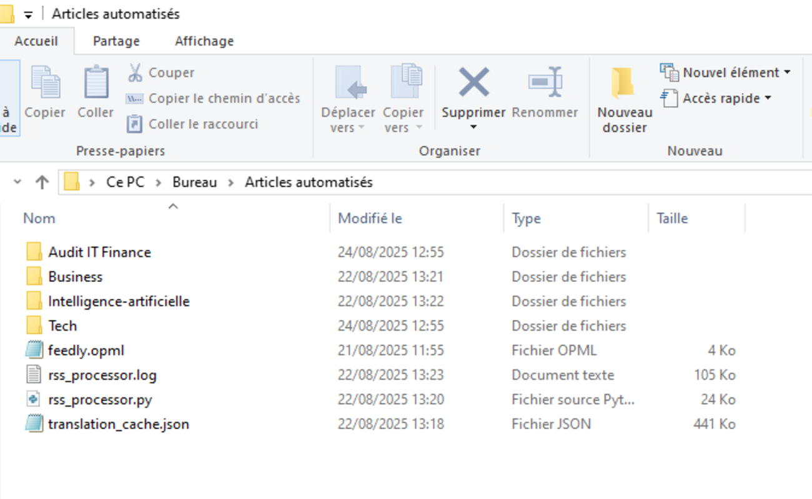

Explications
Ce projet a pour but de démontrer ma capacité à développer une solution complète, de la collecte de données à la génération de documents finaux, en utilisant plusieurs bibliothèques et technologies modernes. L'objectif est de créer un outil qui automatise la veille et la synthèse d'articles de presse à partir de flux RSS, en générant des revues de presse au format Word (.docx).
Fonctionnalités Clés
Ce script Python, rss_processor.py, effectue les tâches suivantes de manière automatique :
- Récupération des Flux RSS : Il se connecte à des flux RSS à partir d'un fichier OPML pour extraire les derniers articles.
- Extraction de Contenu : Le script utilise la bibliothèque
newspaperpour télécharger et analyser le contenu complet des articles. - Traduction Automatique : Les titres et contenus sont traduits en français via plusieurs services pour garantir la cohérence.
- Résumé d'Article : Le script résume les articles longs avec un modèle de langage avancé (BART) pour créer des synthèses concises.
- Génération de Documents Word : Les articles sont compilés dans un document Word avec mise en page, table des matières, en-têtes et pieds de page.
- Traitement en Parallèle :
ThreadPoolExecutorpermet de traiter plusieurs flux simultanément, réduisant le temps global.
Téléchargements
Vous pouvez télécharger les fichiers du projet ci-dessous :
Démonstration en Images



1 / 5
Dossier après exécution
Vue du dossier contenant tous les fichiers générés par le script.